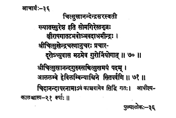

36. आचार्य - 36 - चित्सुखेन्द्रसरस्वती
ख्यातः सुरेश ••• गुरोर्नियोगात् ॥ ७० ॥
श्रीचित्सुखानन्दगुरुः ••• सितपर्वणि ॥ ७१ ॥
चिदाननदापरनामा ••• एकविंश (२१) वर्षाः ॥
Son of Somagiri, dwelling on the banks of river Pālār (Kṣīrapagā), known as Sureśa, (he) became the preceptor. A disciple of Śrī Citsukhendra, disinterest in campaigns/travels, he, on the directions of his preceptor-teacher, remained in the Maṭha itself.
He, the preceptor, Śrī Citsukhānanda attained/clung on to the state of Bliss on the day of Paurṇamī in the month of Aśvinī of the year Hevilambi.
Also known as Cidānanda, he attained siddhi in Kañci itself. His preceptor-ship was for twenty-one years.
